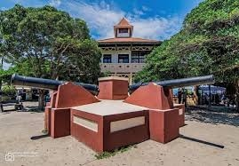

Ubicada frente al muelle de cruceros, es uno de los edificios más antiguos de Puntarenas, fue construido en 1938 en el gobierno del expresidente León Cortes. El edificio era utilizado principalmente para la inspección de la mercancía a exportar y la revisión del producto que ingresa al país y una vez que cada producto pasaba los requerimientos necesarios eran llevados hacia la bodega de aduana que se encuentra a pocos metros de la Capitanía.
.jpg)
La popularidad del mercado hizo que los comerciantes se fuesen adaptando poco a poco, por lo que con madera construían puestos individuales para mayor seguridad y fueron las situaciones sanitarias que vieron como necesidad la construcción de un edificio. Fue así cuando bajo los arboles se comenzaban a colocar los comerciantes a la cercanía de la llegada de las lanchas, con las ventas de maíz, pescado, verduras que eran traídos desde otras zonas costeras.
.jpg)
El parque Mora y Cañas es un punto de suma importancia para el país y en especial para la provincia de Puntarenas ya que posee una gran reseña historia debido a que fue en este sitio donde fallecieron los personajes Juan Rafael Mora Porras y José María Cañas. Todos los años los puntarenenses conmemoran el fusilamiento del ex presidente Juan Rafael Mora Porras y del General José María Cañas. Figuras centrales durante la guerra contra los filibusteros, acontecida entre 1856-1857 tanto uno como otro habían establecido vínculos muy estrechos con Puntarenas, porque Don Juanito, uno de los cafetaleros más importantes en su época, tenía su firma de negocios en este Puerto.
.jpg)